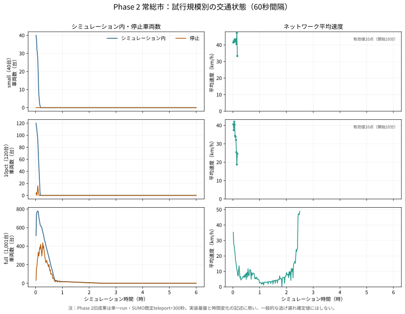

1 / 道路
走行できる道路を作る
OpenStreetMap由来の道路をnetconvertで.net.xmlへ変換し、交差点と道路のつながりをSUMOへ読み込みます。
交通流シミュレーション / TraCI / 評価CSV
実装済み
Phase 2では、Phase 1の閉鎖道路と避難需要をSUMOネットワークへ接続し、車両相互作用、動的閉鎖、再経路探索を実装します。ここで示す旧small・10pct・fullは交通流基盤の結果であり、Phase 3の正式Scenario A（自家用車＋救出走行）とは区別します。
Phase 2の到着・未到着はSUMO既定teleport設定下の記録値であり、「渋滞由来の逃げ遅れは発生しない」という一般主張はしません。

旧単一run・SUMO既定teleport=300秒の結果です。実装基盤と時間変化の説明に限定し、一般的な逃げ遅れ確定値やPhase 3の正式A/B判定には使用しません。
SUMOは道路上の車両移動を再現する交通シミュレーターです。本研究では、地図・人口・避難所・浸水データをSUMO用ファイルへ変換し、Pythonから道路閉鎖を時間ごとに反映しました。
1 / 道路
OpenStreetMap由来の道路をnetconvertで.net.xmlへ変換し、交差点と道路のつながりをSUMOへ読み込みます。
2 / 避難需要
250m人口メッシュから出発地点と車両数を作り、最寄りのSUMO道路へ結び付けます。
3 / 目的地
洪水対応避難施設から浸水想定区域内の施設を除き、目的地をSUMO道路へ結び付けます。
4 / 浸水
浸水深0.5m以上と判定した道路を、PythonのTraCIから閉鎖し、走行中の車へ別経路を探させます。
sumo --versionとnetconvert --versionで確認する。本研究の確認済み版は1.26.0。joso.osm.xmlへ変換し、netconvertでjoso.net.xmlを生成する。OpenStreetMapの読み込み方法はSUMO公式資料を参照する。.rou.xmlへ車両の出発地・目的地、.sumocfgへ道路網・車両・実行時間を記録する。| データ | 本研究での用途 | 取得先 | 取得方法 |
|---|---|---|---|
| 洪水浸水想定区域 A31a | 浸水深0.5m以上の道路閉鎖、避難所の安全確認 | 国土交通省 国土数値情報 | download_data.pyで自動取得 |
| 行政区域 N03 | 常総市境界の抽出、41市区町村への拡張 | 国土交通省 国土数値情報 | download_data.pyで自動取得 |
| 避難施設 P20 | 洪水対応避難所の候補作成 | 国土交通省 国土数値情報 | download_data.pyで自動取得 |
| 2015年豪雨の浸水範囲 | 鬼怒川氾濫の時系列浸水範囲 | 国土地理院 | 配布ページから手動取得 |
| 2015年250m人口メッシュ | 出発地、人口、高齢者数、車両数の基礎 | e-Stat 地図で見る統計 | 統計ID T001178、茨城県を手動取得 |
| 浸水ナビ・車両統計 | 破堤条件の補助、自家用車台数の設定 | 浸水ナビ／関東運輸局 | 配布ページ・APIから手動取得 |
| 作るもの | 主な入力 | SUMOでの役割 |
|---|---|---|
joso.net.xml | 道路データ | 道路と交差点のネットワーク |
agent_origins_sumo.csv | 人口メッシュ、道路網 | 車両の出発地点と台数 |
shelters_sumo.csv | 避難施設、浸水想定区域、道路網 | 安全な避難先 |
closure_timeline_sumo.json | 浸水時系列、道路ID対応表 | 時間ごとの道路閉鎖 |
scenario_a.rou.xml | 出発地、避難所、車両台数 | 各車両の出発地・目的地 |
scenario_a.sumocfg | 道路網、車両、実行条件 | SUMOを起動する設定ファイル |
cd 04_プログラム
python scripts/download_data.pydata/manifest.csvでdirect_zipのデータは自動取得・展開されます。manualのデータは表示された公式URLから取得し、指定された保存先へ配置します。大容量の生データはGitへ登録せず、利用規約と取得時点を確認してください。
統合Excelブックと、Excelで開ける元CSVをまとめています。表・考察・卒論転記に使う成果物です。
SUMOの車両移動、道路閉鎖、対象市区町村別の実行結果を画面で確認します。